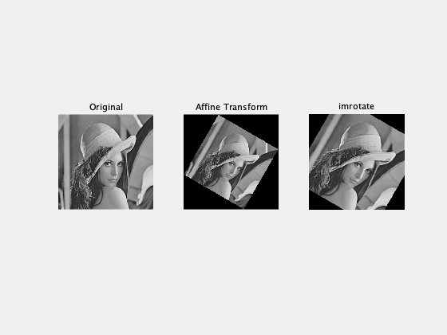

% 1. グレースケールにする。
img = imread('Lenna.bmp');
grayImg = rgb2gray(img);
% 2-1. アフィン変換行列を使った場合
theta = 30 * pi / 180; % 30度回転
A = [cos(theta) sin(theta) 0; -sin(theta) cos(theta) 0; 0 0 1]; % 回転行列
tform = affine2d(A);
affineImg = imwarp(grayImg, tform);
% 2-2. imrotateを使った場合
imrotateImg = imrotate(grayImg, -30, 'bilinear', 'crop');
% 結果を表示する。
figure(1);
subplot(1, 3, 1); imshow(grayImg); title('Original');
subplot(1, 3, 2); imshow(affineImg); title('Affine Transform');
subplot(1, 3, 3); imshow(imrotateImg); title('imrotate');
